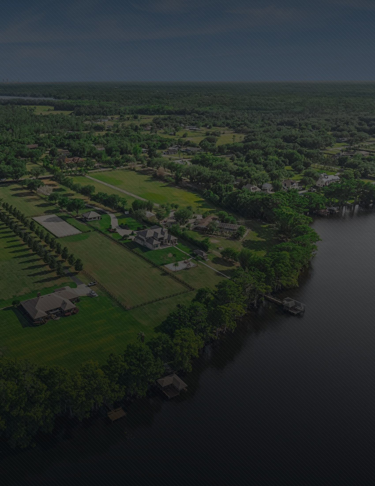
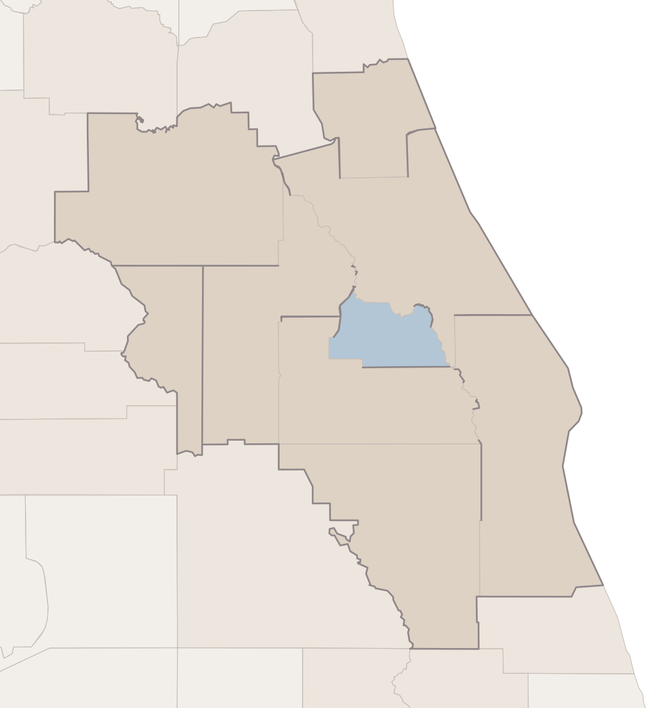
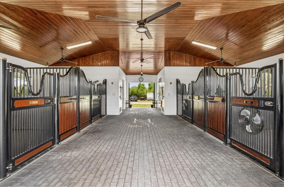

746 Lake Mills Road · Digital Billboard Strategy
Four stalls and fifteen acres, seventeen miles from Orlando.
Property
746 Lake Mills Road, Oviedo, Florida 32766
List Price
$3,500,000
The Residence
5,776 square feet · 6 bedrooms · 8 bathrooms
The Land
15.06 acres, two contiguous parcels · 296 ft on Lake Mills
Market
Orlando–Daytona Beach–Melbourne · nine counties
Campaign Window
21 September – 21 October 2026 · thirty days
Prepared for the owner · The plan for the thirty days ahead
The Market
One television market, nine counties wide.
746 Lake Mills Road stands on the eastern edge of Seminole County, where the built-up side of Orlando gives way to pasture and the St. Johns. For advertising bought by market rather than by address, that places the property in the Orlando–Daytona Beach–Melbourne market — nine counties wide, running from the horse farms of Marion in the north-west to the Space Coast in the south-east. Seminole is one of those nine; the other eight are drawn darker on the map opposite: Orange, Osceola, Lake, Sumter, Marion, Volusia, Flagler and Brevard.
The paler counties are the second ring. They are close by, but they sit outside the market this campaign is targeted in, and they are reached by the online advertising instead.

746 Lake Mills Rd
Orlando
Sanford
Daytona Beach
Ocala
The Villages
Kissimmee
Melbourne
Palm Coast
Seminole County
Rest of the Orlando Market
Second Ring
CountyRing
Seminole01
Orange02
Osceola02
Lake02
Sumter02
Marion02
Volusia02
Flagler02
Brevard02
St. Johns03
Putnam03
Alachua03
Levy03
Citrus03
Hernando03
Pasco03
Polk03
Highlands03
Okeechobee03
Indian River03
Ring 01 the residence · 02 the Orlando market · 03 adjacent
Seminole County was established from the property’s coordinates, not inferred from the postcode: two separate federal records return Seminole, and the coordinates fall inside the Seminole boundary when tested against all sixty-seven Florida counties. The nine-county roster was taken from the federal county-by-market schedule.
The Argument
The buyer keeps horses and works in Orlando.
Most people who want a barn, four paddocks and a sand arena accept that they will be driving an hour to anything. This property does not ask that. Downtown Orlando is seventeen miles away in a straight line, the airport eighteen, the university five and a half. A working equestrian place inside the ring of a major city, on a lake, with a dock, is rare enough that the buyer will not find it by searching. They have to be shown it, in the market they already live in.
01
Reach the market, not just the postcode
The targeting favours the parts of the market that already contain both money and horses — the north-east arc of Orlando, and the farm country around Ocala — rather than only the area immediately around the property.
02
The barn is the argument, not a footnote
A lakefront house at this price is not unusual in central Florida. A lakefront house with four stalls, four paddocks and an arena this close to the city is. The advertising leads with the land and the barn, because that is what is scarce.
03
One idea per screen
A driver has a few seconds. Each frame carries the land, the price, the address and nothing else. No feature lists, no agent portrait, no logos competing with the property.
04
One address, everywhere
Every screen ends at the same short web address as the rest of the campaign, so that a glance from a car can be recovered from a phone that evening.
The Property, In Figures
6 · 8
Bedrooms · Bathrooms
296 ft
Lake Mills Frontage
The Targeting
Chosen by area, not by billboard.
It is worth being clear about how these screens work, because it is not how billboards used to work. We do not rent one sign on one road for a month. These are digital screens bought programmatically: we tell the exchange which parts of the market to serve the property into, and it places the advertisement on whatever digital screens are available there while the campaign runs. So there is no list of board addresses in this document, and there will not be one. What we choose is the geography.
In practice that means roadside and public digital screens across the nine counties on the previous page, weighted towards the five areas below.
AreaTargeted GeographyWhy It Is Included
01
Seminole County · Oviedo, Chuluota, Geneva, Sanford, Lake Mary
Highest priority
The county the property is in, and the one part of metropolitan Orlando where large fenced acreage is normal. These are the people who know Lake Mills by name and mention a place like this to someone who wants it.
02
Marion County · Ocala and the farm belt
Highest priority
The reason this market suits the property. Marion sits inside the same nine counties and holds the densest concentration of horse farms in the country — seventy-three miles away in a straight line, and no separate campaign needed to reach it.
03
Orange County · Downtown Orlando, Winter Park, Lake Nona
High priority
The largest concentration of income in the market, and the offices the buyer most likely drives to. Targeting here is about the property looking reachable from the city.
04
Volusia and Flagler · DeLand, Ormond, Palm Coast
Moderate priority
The St. Johns side of the market, where equestrian acreage and coastal money already sit together. Buyers here understand land.
05
Brevard · Osceola · Lake · Sumter
Steady presence
The Space Coast, the ranch country south of the city, the lake and retirement country west of it. A lower share of delivery, so the whole nine-county footprint is covered for the full thirty days rather than in bursts.
Where The Emphasis Sits
Areas 01 and 02 take the largest share of delivery: one is where a buyer may already live, the other is where the people who want a barn already are. Orange County takes the next largest share. The remaining counties run at a lower, steady share so that nowhere in the market is dark.
We would rather run everywhere in the market for the full thirty days at a measured weight than crowd two weeks and then disappear. And one consequence of buying this way is worth saying plainly: we cannot promise you a photograph of your barn on a named sign at a named junction. What we can say is which parts of Florida saw it, and how often, once the month is over.

The barn the advertising leads with
In A Straight Line
University of Central Florida 5.5 mi · Downtown Orlando 17.2 mi · Orlando International Airport 18.0 mi · Ocala 73.1 mi — from the property’s coordinates; straight-line, not driving times.
What Happens Next
The month ahead, in order.
The market, the areas inside it and where the emphasis sits are decided; the reasoning is on the pages before this one. What follows is the sequence. The steps in black are settled and ours to run. The two in grey are figures that do not exist yet, left blank rather than estimated.
01
The Advertisement
Built from the photography of the land, the barn and the lake frontage, in the Aperture setting used across the rest of the campaign.
02
Your Sign-Off
You see the advertisement and approve it before a single screen carries it. That one sign-off is yours.
03
21 September 2026
The campaign opens across the nine counties of the Orlando–Daytona Beach–Melbourne market, weighted to Seminole and Marion.
04
Thirty Days
Continuous to 21 October 2026, at a measured weight, with no dark weeks and nowhere in the market unlit.
05
Impressions
To be confirmed. We will state a figure only once an operator has committed to one in writing, and it will then be the number we are held to.
06
Performance
Nothing measured. The campaign has not begun, so there is nothing here to read yet.
07
After 21 October
A report, with which parts of Florida saw the property and how often — whatever the operators are able to verify.
Two Things That Will Never Appear
No individual board and no screen count, at any stage. Screens are served programmatically across the targeted areas, and the number of them varies day to day with what the exchange has available. We cannot promise a photograph of your barn on a named sign; we can tell you the geography it ran in.
The Property, Online
Where every screen resolves.
The Rest Of The Campaign
A direct mail campaign into the same part of Florida runs in the same thirty days; its distribution is set out in its own document.
Your Agent
Cynde Velez
Aperture Global Real Estate
+1 407 619 5869
Cynde.Velez@ApertureGlobal.com